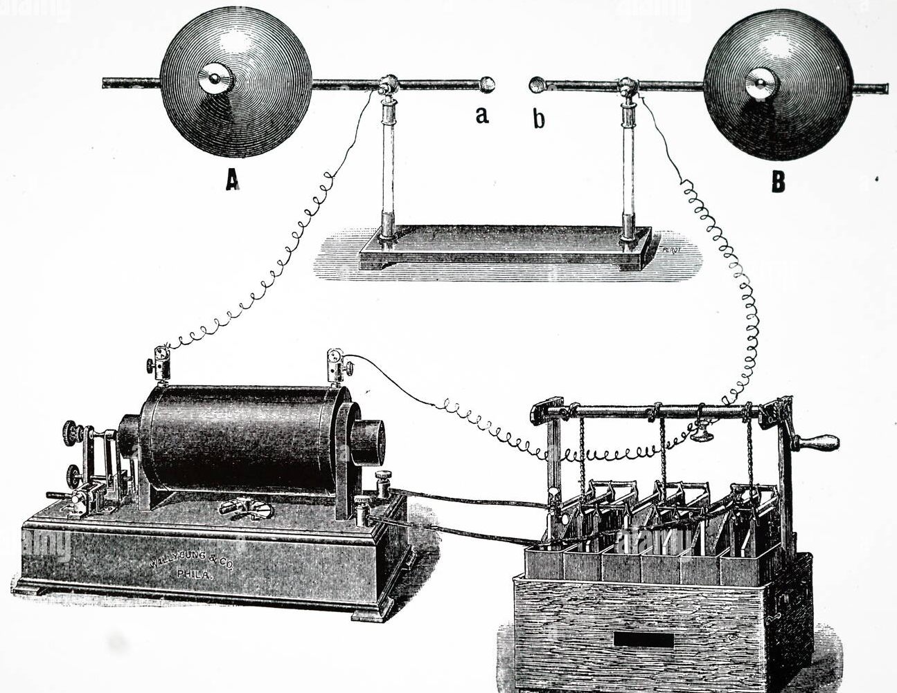
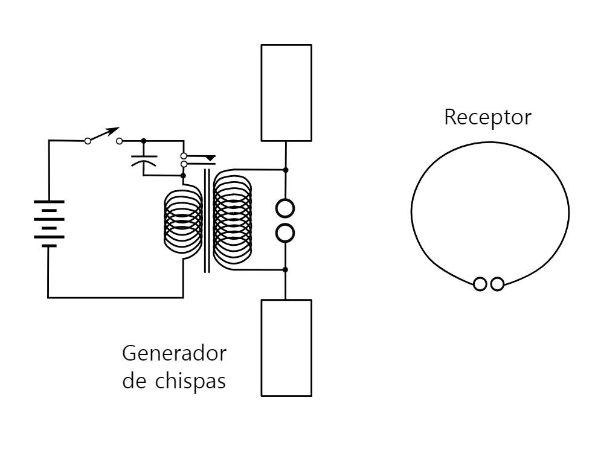
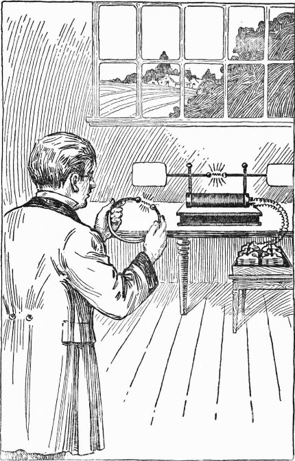
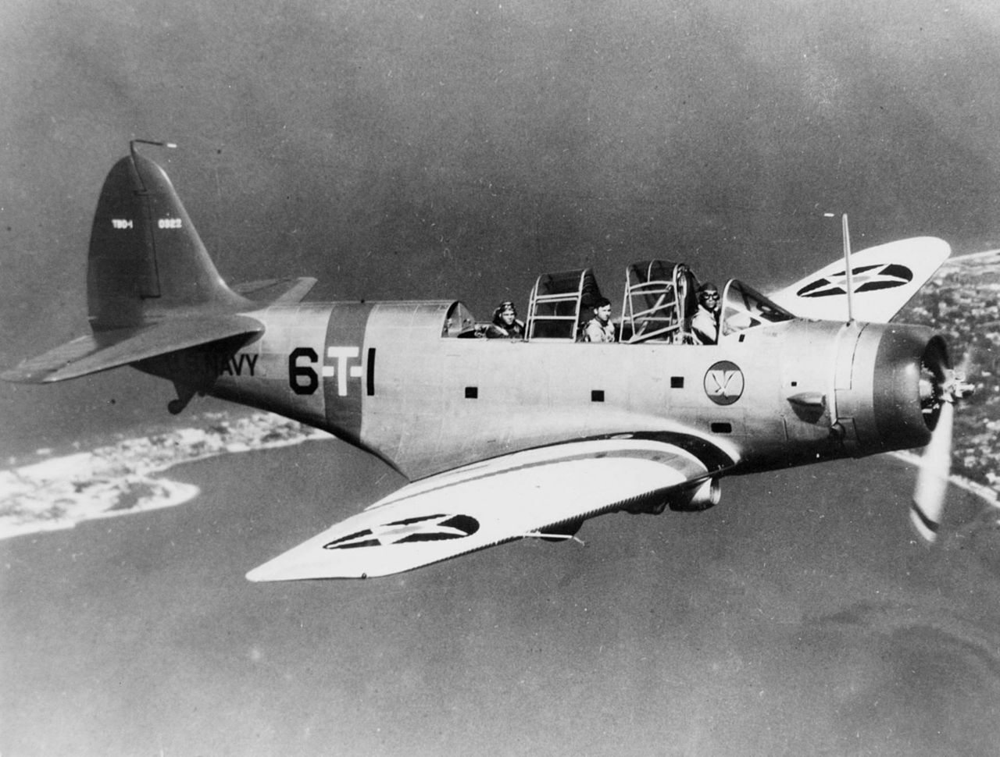
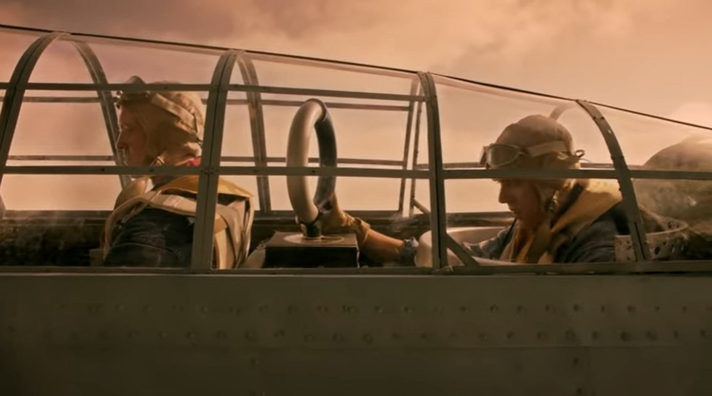
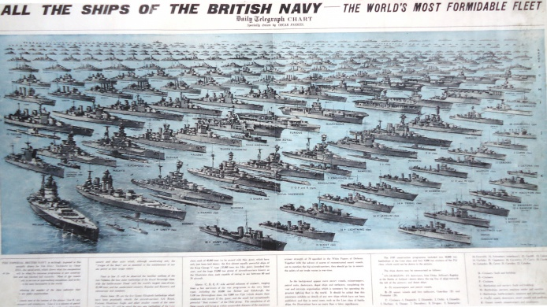
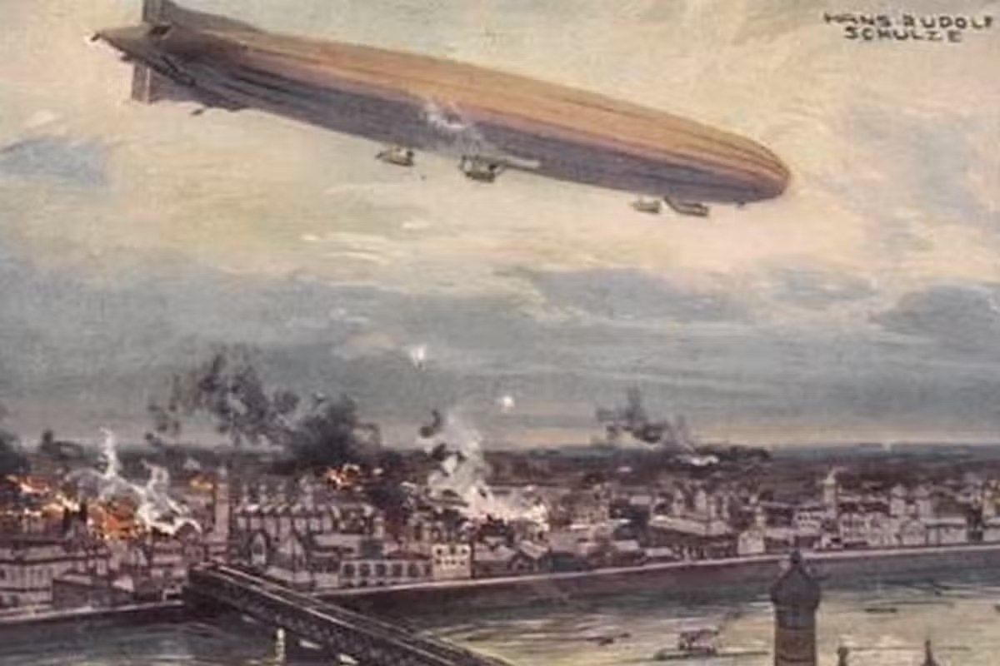
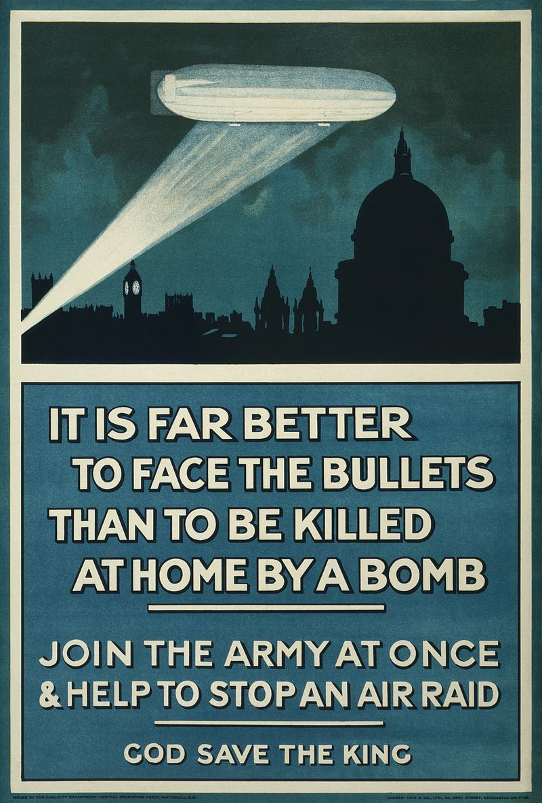
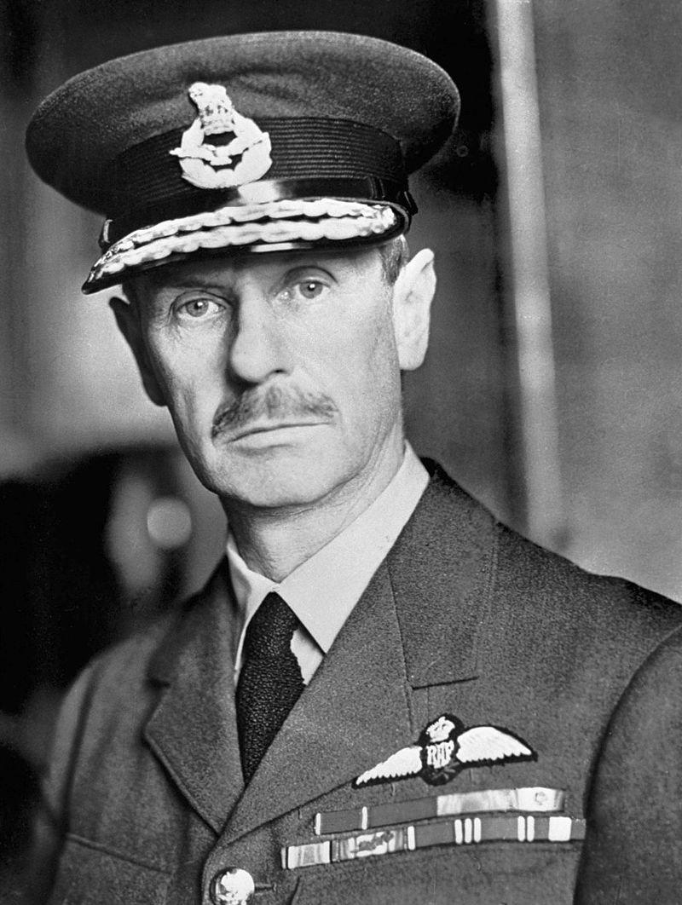
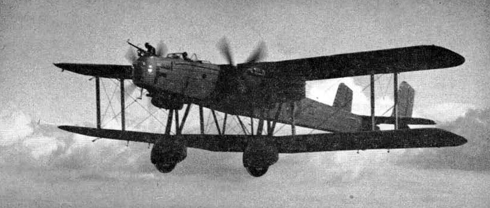

레이더 개발 이야기 (1) - 레이더 없는 레이더 실험
게시: 2022-09-15T06:30:00+09:00
<Radar의 시작 - Dr. Hertz의 실수> 뉴튼 이후 가장 위대한 업적을 세운 물리학자라는 맥스웰(James Clerk Maxwell)은 1864년 전가지장에 대한 역학이론 (A dynamical theory of the electromagnetic field)라는 유명 이론을 발표. 그러나 그를 실험으로 입증은 못(안) 함. 이 이론을 읽고 깊은 감명을 받아 이걸 실험으로 입증한 사람이 바로 헤르츠(Heinrich Hertz). 그는 1886년 spark-gap transmitter (그림1)에 교류 전류를 가한 뒤, 완전히 분리된 다른 spark-gap receiver에서 똑같은 주기의 spark를 관찰함으로써 전자파라는 것이 실존한다는 것을 실험으로 입증 (그림2).
 
그런데 이렇게 역사적인 큰 발견을 해놓고도 당시 29세의 젊은 교수였던 헤르츠는 '무선 전파라는 나의 발견이 실용적인 쓸모가 있을 것 같지는 않다'라고 언급. 물론 사람들은 헤르츠가 뭐라고 하건 순식간에 이 전파라는 것을 이용하기 시작. 불과 몇 년 후인 1890년대 초반부터 10대의 마르코니가 무선 통신을 연구하기 시작했고, 1907년에는 300km가 넘는 거리에서 음성이 무선으로 전달됨. 이렇게 활발히 무선 통신이 이루어지면서, 이 전파 발신원이 어디인지 찾아내는 것이 군사적으로 큰 의미를 가지게 되었는데, 더 웃긴 것은 전파 발신원을 찾는 방법조차 이미 헤르츠가 1886년에 (별 생각없이) 찾아냈다는 것. 헤르츠는 둥근 loop 안테나를 가지고도 전파 실험을 계속 하다가 loop의 평면이 전파 발신원을 똑바로 향하도록 두면 감도가 가장 크고, 90도 꺾어서 loop의 모서리 방향이 발신원을 향하게 두면 감도가 0으로 떨어지는 것을 발견.

이 덕분에 전파는 거의 초창기부터 발신원을 찾는 방법이 연구되었는데, 문제는 당시 쓰던 저주파 장파를 잡아내려면 안테나도 무지하게 커야 했다는 것. 그래서 육상에서는 힘들었지만 항공기나 선박에서는 고정된 안테나를 달고 한바퀴 선회를 하면서 감도를 측정하는 방법을 쓰기도. 나중에 전자기기가 발달하면서 WW2 때는 항법용으로도 loop 안테나가 활발히 사용됨

(WW2 초기의 미해군 Devastator 뇌격기, 3인승이었음. 조종사 - 폭격수 - 무선통신수 겸 후방기총수)

(Devastator 뇌격기의 최후방 무선통신수 좌석의 loop 안테나. 망망대해에서 자신의 모함을 찾는데 사용됨)
게다가 레이더의 기본 원리, 즉 전파가 빛처럼 반사된다는 것조차 헤르츠가 1886년 실험 때 이미 발견. 그럼에도 불구하고 레이더의 개발은 1930년대까지 진행되지 않았는데, 1930년대 들어 갑자기 레이더 개발에 열이 붙은 이유가 있었음. <영국을 구할 살인광선을 개발하라> 1935년 1월, 보통 Skip이라는 별명으로 불리우던 28세의 젊은 엔지니어 Arnold F. Wilkins는 영국 국립 물리 연구소(National Physical Laboratory)에서 전파 부서에서 일하고 있던 중 황당한 지시를 받음. 바로 "전파를 빔처럼 쏘아서 폭격기 조종사의 피를 끓게 만들어 죽일 방법을 연구해보라"는 것. 섬나라 영국은 1588년 스페인 무적함대 격파 이후 언제나 해군에 국가 방위 제1선을 맡겨 두고 있었고, 강력한 함대만 있으면 영국은 안전하다고 철석같이 믿고 있었음. 그런데 WW1을 겪어보니 항공기라는 것이 생겼고 제펠린 비행선이 런던을 폭격하는 일까지 일어남. 그래도 어찌어찌 WW1을 이기고 이제 좀 괜찮아지나 싶었는데 유럽의 정세가 또 심상치 않게 된 것. 영국의 공군력이 해군처럼 강력하다면 안심이겠는데 그게 그렇지가 못함.

(해군에 진심인 나라 영국. 1940년 당시 영국 해군 함대를 집결시켜 놓은 상상도.)

(WW1 당시 런던을 폭격하는 제펠린 비행선)

(방위 실패를 모병에 활용하는 매우 부적절한 모병 포스터의 구호. "집에 있다가 폭탄 맞느니 전선에 나가 총알을 맞는게 더 낫다!")
영국 국방성은 하늘로부터 영국을 지킬 모든 방법을 찾으려고 '대공 방어를 위한 과학 조사 위원회' (The Committee for the Scientific Survey of Air Defense)를 만듬. 여기서는 아무리 사소한 것이나 터무니없는 것이라도 '해보기는 했나'라는 정신으로 그냥 넘어가지 말라는 당부와 함께 온갖 아이디어를 찾기 시작. 당시엔 이미 수퍼맨 만화가 나온 뒤였고, 따라서 장군님들도 살인광선 같은 온갖 SF 무기에 대해 잘 알고 있었음. 그래서 국립 물리 연구소에도 '살인광선 같은 거 없냐'라는 요청이 들어온 것. 실제로 윌킨스는 연구에 돌입. 그러나 불과 몇시간 안에 그는 종이로 끼적끼적 계산해보고 전파의 에너지로는 조종사의 피를 끓이는 건 고사하고 흥분조차 시킬 수 없다는 결론을 내림. 그래서 그는 상관인 Robert A. Watson-Watt 박사에게 가서 '그거 안돼요 안돼'라고 보고. 다만, 그는 한마디를 덧붙임. "거 전파를 방공 활동에 쓰시려면 더 좋은 방법이 있긴 한데..." 몇 년 전인 1931~32년 영국 우정국 엔지니어들이 스코틀랜드의 섬과 본토 사이에 무선 통신 시설을 놓다가 발견한 사실을 윌킨스에게 해줬었는데 그 이야기를 생각해낸 것. 그때 섬과의 통신이 가끔씩 잘 안되는 경우가 있었음. 나중에 알고보니 그 무선 기지국 사이에 항공기가 날아갈 때마다 그런 일이 있었던 것. 이는 틀림없이 라디오 전파가 항공기에 부딪혀 반사되는 바람에 발생하는 것이었고, 이를 이용하면 항공기가 어느 상공을 날고 있는지 여부를 전파로 알아낼 수 있다는 것을 의미. 실은 이런 실험과 관측은 이미 그 전에도 러시아와 미해군에서 간헐적으로 수행되어 안개 속 혹은 야간에 선박 탐지에 이용하자고 제시되었던 것. 그러나 러시아나 미해군이나 젊은 엔지니어들의 그런 보고에 대해 고위 당국은 무관심했으므로 무시되었음. 그러나 1935년의 영국 공군은 지푸라기라도 잡고 싶은 심정이었고, 러시아나 미해군의 엔지니어와는 달리 윌킨스는 기존 라디오 송신기로도 폭격기에서 충분한 강도의 반사파를 얻을 수 있다는 계산까지 곁들여 냈으므로 그 상관인 왓슨-왓 박사는 전파를 이용한 '적 공습 사전 경보기'를 만들자는 제안을 들고 공군성으로 달려감. 왓슨-왓은 기가 막힌 아이디어를 들고 왔다는 칭찬을 들으리라 기대했건만 그를 가로막은 것은 차가운 얼굴의 공군 소장 Hugh Dowding (아래 사진) 다우딩은 왓슨-왓에게 한 말은...

<2주만에 개발된 레이더> 당시 영국 공군은 폭격기 마피아가 주도. 군대에서는 수비군보다야 항상 공격군이 득세할 수 밖에 없는데, 전투기는 수비용이고 폭격기가 공격용이기 때문. 그런 영국 공군에서 다우딩은 소수의 전투기파. 특히 당시 분위기는 전투기가 아무리 막으려 해도 폭격기는 결국 돌파한다는 믿음이 팽배하던 시절. 길목을 막으면 되는 지상군과는 달리 하늘은 엄청나게 넓고 뻥 뚫려 있는 곳인데다, 당시 폭격기의 속도가 전투기의 속도보다 엄청나게 뒤떨어진 것이 아니었으므로, 아무리 전투기가 많아도 여러 방향 여러 고도에서 동시에 여러 편대의 폭격기가 달려들면 전투기들은 그걸 다 막을 방법이 없었음. 그런 고민에 끙끙대던 다우딩에게 왓슨-왓이 들고온 '전파를 이용한 조기경보 장치'는 굉장한 희소식이었지만 다우딩은 냉철한 사람. 그는 '이게 실제로 작동하는 물건이라는 데모를 보여주기 전에는 연구 자금 지원은 없다'라고 딱 자름. 돈받으러 갔다가 숙제만 받아가지고 온 왓슨-왓은 이 사태의 원흉 윌킨스에게 2주 안에 최저 예산으로 데모를 만들어 오라고 지시. 그런데 젊은 윌킨스는 그걸 해냄. 먼저, 그는 항공기에서 가장 선명한 반사파를 얻어내기 위해서는 항공기 날개폭 길이에 해당하는 파장을 가진 전파를 써야 한다고 판단. 그래서 당시 폭격기의 날개폭인 대략 25m 정도의 장파를 사용하기로. 전파 수신기와 그 신호를 볼 브라운관(CRT, cathode ray tube) 스크린은 이미 실험실에 가지고 있던 것을 재활용. 문제는 25m 파장의 전파 송신기. 이건 값싸게 빨리 만들 방법이 없었음. 그런데 생각해보니 만들 필요가 없었음. 당시 BBC 라디오의 다벤트리(Daventry) 기지국에서는 49m 파장의 전파로 방송을 하고 있었는데, 그 정도면 자신이 생각한 25m 파장 대신 써도 된다고 생각. 게다가 방송국 전파만큼 센 송신파도 찾기 어려움. 그래서 영국 공군에게 BBC 다벤트리 기지국 근처로 폭격기를 날려보내라고 부탁. 1935년 2월 26일, Handley Page Heyford 폭격기(사진)가 약속된 장소, 즉 이 방송국 근처의 공원 위로 지나갔고, 이 공원에는 반사파 수신 안테나와 수신장치를 실은 윌킨스의 차량이 주차되어 있었음. 당연히 현장에는 영국 공군 관계자도 와서 보고 있었음. 이건 자신 만만한 윌킨스에게도 살 떨리는 순간. 자기도 난생 처음 해보는 테스트인데, 사전 연습이 아예 불가능했던 테스트였음. 그리고 폭격기가 지나갈 때, 윌킨스의 브라운관에는 얌전히 있던 초록색 점이 갑자기 위로 휙 치솟음.

이 보고를 받고 다우딩은 1만 파운드의 개발 착수금을 지급. 이것이 '살인광선 같은 거 없냐'라며 시작된 영국 공군의 'The Committee for the Scientific Survey of Air Defense'의 첫번째 프로젝트, 즉 레이더 개발이었음. ** 나중에야 알았지만 폭격기 날개폭보다는 폭격기의 프로펠러 회전이 강력한 반사파 획득에 큰 역할을 했다고.